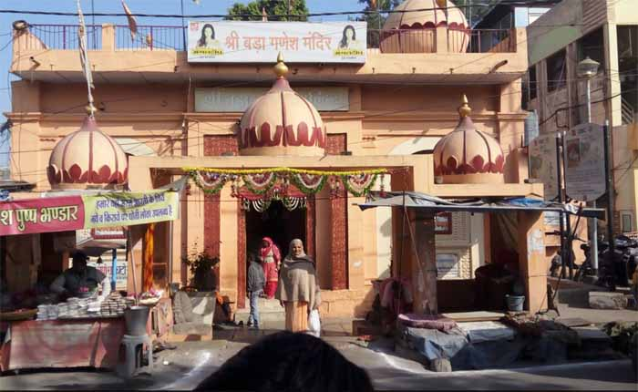

श्री महाकालेश्वर मंदिर के पीछे तथा प्रवचन हॉल के सामने श्री गणेशजी की विशालकाल एवं अत्यंत आकर्षक मूर्ति प्रतिस्थापित है।
इस मंदिर का निर्माण 20वीं शताब्दी के प्रारंभ में महर्षि सांदीपनि के वंशज एवं विख्यात ज्योतिषविद् स्व. पं. नारायणजी व्यास द्वारा करवाया गया था।
यह स्थान स्व. व्यासजी का उपासना स्थल भी रह चुका है। इस मंदिर में पंचमुखी हनुमानजी की अत्यंत आकर्षक मूर्ति प्रतिष्ठित है।
इसके अतिरिक्त भीतरी भाग में, पश्चिम दिशा की ओर नवग्रहों की मूर्तियां हैं।

ज्योतिष एवं संस्कृत के विख्यात केंद्र के रूप में विकसित यह स्थान हजारों छात्रों को अब तक शिक्षा प्रदान कर चुका है।
श्री नारायण विजय पंचांग का प्रकाशन भी यहां से होता है। स्व. पं. नारायणजी व्यास के पुत्र प्रकांड विद्वान स्व. पं. सूर्यनारायण जी व्यास
ने ज्योतिष, साहित्य और इतिहास के क्षेत्र में विशिष्ट योगदान दिया है।